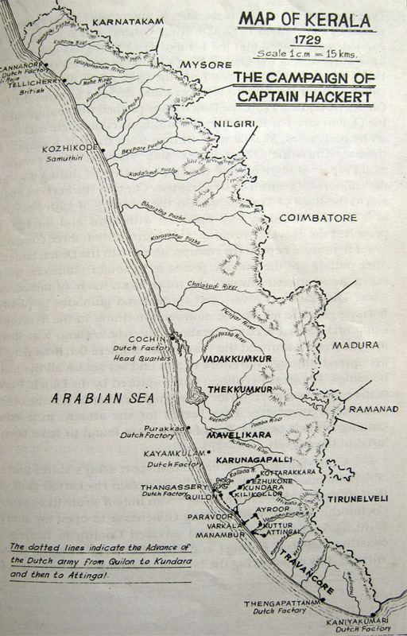
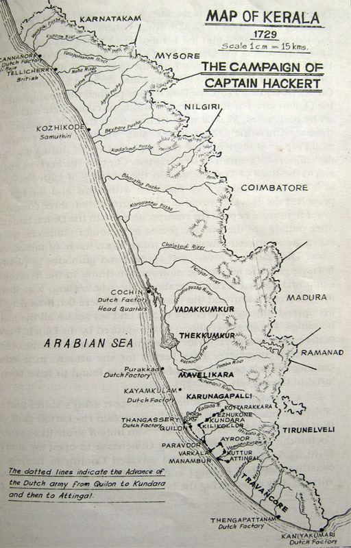
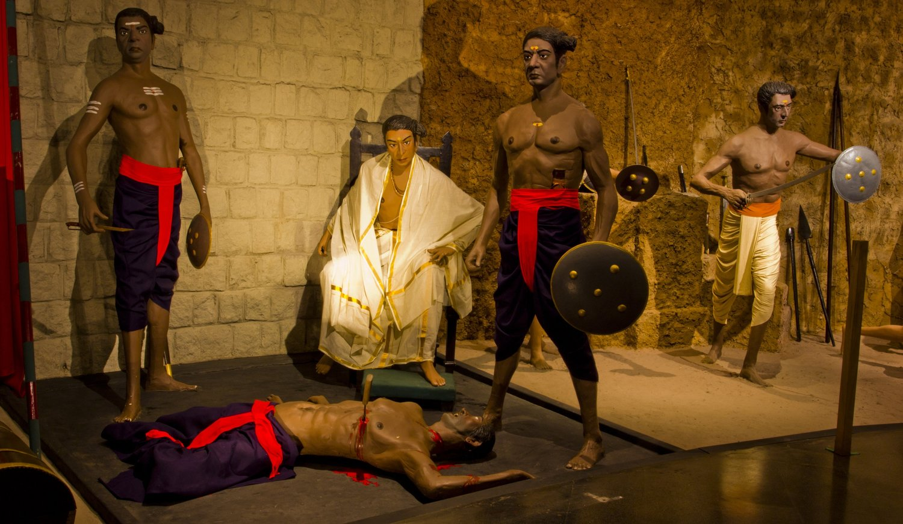
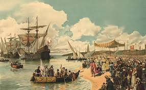
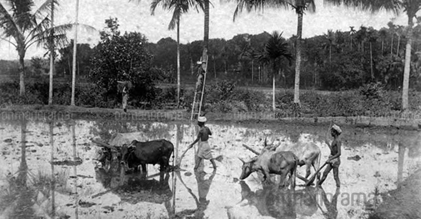
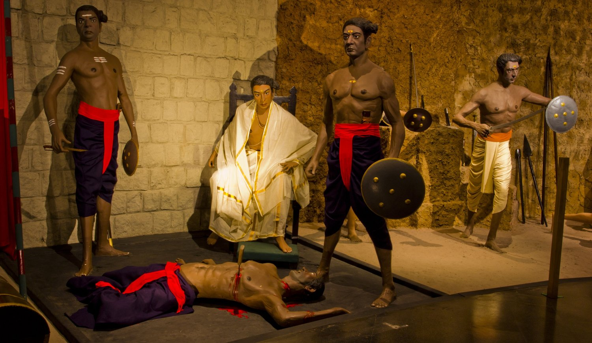
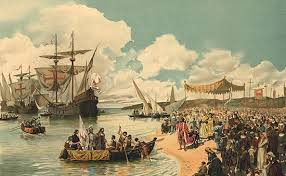
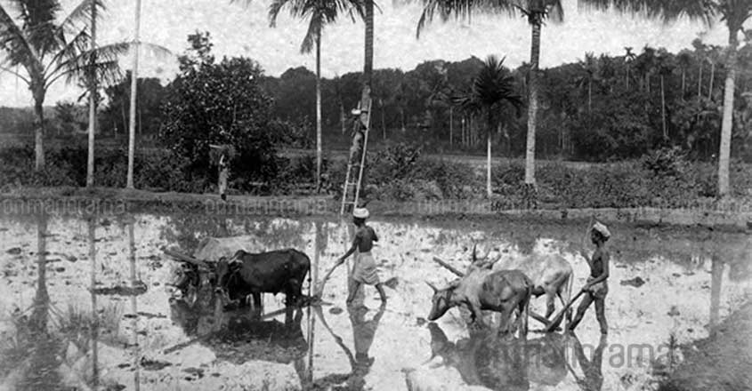

Brief Histoy Of Kerala
Kerala: History during British Era and Colonial Period
In 1734, East India Company ceded the island of Dharmadom near Kannur and Thalassery. Here, the British initiated a factory and English settlements following the cession.
In 1761, the British captured Mahe, and the settlements were handed over to the ruler of Kadathanadu. The British restored Mahe to the French as a part of the 1763 Treaty.
In 1784, the British agreed to restore to the French their settlements in India, and Mahe was handed over to the French in 1785.
In 1757, the Palakkad Raja sought the help of the Hyder Ali of Mysore to resist the invasion of Zamorin of Kozhikode. In 1766, Hyder Ali defeated Zamorin Kozhikode.
The smaller provinces and princely states were unified under the ruler of Mysore and later his successor Tipu Sultan, who launches campaigns against the British East India Company, which resulted in four Anglo-Mysore wars.
By the end of the 18th century, Kerala fell under the control of the British, but initially British had to suffer local resistance.
After the Independence, India was partitioned into India, Pakistan, Travancore, and Kochi.
In November 1956, the taluk of Kasargod in the South Canara district of Madras, the Malabar district of Madras, and Travancore Cochin, without four southern taluks and Senogottai taluk merged to form the state of Kerala under the State Reorganisation Act.
A communist-led Government under the E. M.S Namboodiripad resulted from the list of elections for the new Kerala Legislative Assembly in 1957.
 

 




